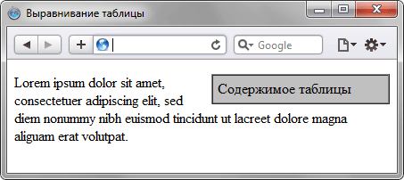

| Пост о WWW | |
|---|---|
| Юлия Давыдовская | 10.01.2019 |
|  | |
| Для #задания выравнивания #таблицы по центру #веб -стр или по одному из ее краев предназначен атрибут align тега < table >. Результат будет заметен только в том случае, если ширина таблицы не занимает всю доступную область, другими словами, меньше, чем 100%. На самом деле align не только устанавливает выравнивание, но и заставляет текст обтекать таблицу с других сторон аналогично поведению тега < img >. В примере 12.2 показано выравнивание таблицы по правому краю и ее обтекание текстом. | |
| комментарии к посту: | |
| Алена | Таблицы больше не используются для вёрстки веб-страниц и компоновки отдельных элементов, потому что такой приём не обеспечивает гибкость структуры и адаптивность сайта, существенно увеличивая HTML-разметку |
| Александр | Каждой таблице можно добавить связанный с ней заголовок, расположив его перед таблицей или после неё |
| Форма для добавления комментария: | |
| Пост о QQQ | |
|---|---|
| Настя Давыдовская | 12.01.2019 |
| Для #задания выравнивания #таблицы по центру #веб -стр или по одному из ее краев предназначен атрибут align тега < table >. Результат будет заметен только в том случае, если ширина таблицы не занимает всю доступную область, другими словами, меньше, чем 100%. На самом деле align не только устанавливает выравнивание, но и заставляет текст обтекать таблицу с других сторон аналогично поведению тега < img >. В примере 12.2 показано выравнивание таблицы по правому краю и ее обтекание текстом. | |
| комментарии к посту: | |
| Татьяна | Таблицы больше не используются для вёрстки веб-страниц и компоновки отдельных элементов, потому что такой приём не обеспечивает гибкость структуры и адаптивность сайта, существенно увеличивая HTML-разметку |
| Сергей | Каждой таблице можно добавить связанный с ней заголовок, расположив его перед таблицей или после неё |
| Форма для добавления комментария: | |